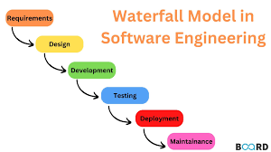

A Engenharia de Software é uma área da computação dedicada ao desenvolvimento, planejamento, construção, teste e manutenção de softwares de forma organizada e sistemática. Ela aplica princípios de engenharia para criar programas confiáveis, eficientes e que atendam às necessidades dos usuários. O objetivo principal é evitar erros, reduzir custos e garantir que os sistemas sejam de qualidade, seguros e fáceis de manter ao longo do tempo.
A Engenharia de Software surgiu como uma resposta aos problemas enfrentados no desenvolvimento de programas nas décadas de 1950 e 1960. Nessa época, os computadores começaram a ser usados em grande escala em empresas e governos, mas os softwares eram desenvolvidos de forma improvisada, sem métodos organizados. Isso resultava em sistemas cheios de erros, atrasos nos projetos e custos muito altos. Esse período ficou conhecido como crise do software, pois muitos projetos falhavam ou não eram concluídos. Para resolver esses problemas, especialistas passaram a buscar formas mais estruturadas de desenvolver software, aplicando conceitos da engenharia tradicional. A partir desse momento começaram a surgir metodologias, processos de desenvolvimento e técnicas de planejamento que tornaram o desenvolvimento de programas mais organizado e confiável. A área passou então a ser chamada de Engenharia de Software, pois utilizava princípios científicos e métodos sistemáticos para produzir software de qualidade. Com o avanço da tecnologia e da internet, a Engenharia de Software se tornou cada vez mais importante. Hoje ela envolve diversas práticas, como modelagem de sistemas, testes automatizados, controle de versões, desenvolvimento ágil, segurança da informação e manutenção contínua de software. Essas práticas permitem que equipes grandes trabalhem juntas no desenvolvimento de sistemas complexos utilizados no mundo inteiro.

Margaret Hamilton Foi responsável pela liderança da equipe que desenvolveu o software de bordo das missões do Apollo Program. Seu trabalho introduziu conceitos fundamentais de confiabilidade e tratamento de erros em sistemas críticos, sendo uma das primeiras pessoas a utilizar o termo engenharia de software. Alan Turing Considerado um dos pais da computação moderna, contribuiu com conceitos teóricos fundamentais sobre algoritmos e máquinas computacionais, que formaram a base para o desenvolvimento de softwares. Frederick P. Brooks Jr. Autor do livro The Mythical Man-Month, que discute os desafios da gestão de projetos de software e explica por que adicionar mais pessoas a um projeto atrasado pode torná-lo ainda mais lento. Edsger W. Dijkstra Contribuiu para a criação de métodos de programação estruturada e algoritmos importantes, defendendo práticas de programação mais organizadas e seguras. Barry Boehm Desenvolveu o Modelo Espiral de desenvolvimento de software, que combina planejamento, análise de risco e testes ao longo do processo de criação de sistemas.

Com o passar do tempo, diversas metodologias foram criadas para melhorar o desenvolvimento de software. Essas metodologias ajudam equipes a organizar melhor o trabalho e reduzir erros durante o desenvolvimento. Entre as mais conhecidas estão os métodos tradicionais, como o modelo cascata, e os métodos modernos, como as metodologias ágeis. O modelo cascata foi um dos primeiros modelos de desenvolvimento de software. Nele, o projeto segue etapas sequenciais, como planejamento, análise, desenvolvimento, testes e manutenção. Apesar de organizado, esse modelo pode ser rígido, pois mudanças durante o desenvolvimento são difíceis de aplicar. Com a evolução da tecnologia, surgiram metodologias ágeis que permitem maior flexibilidade no desenvolvimento. Um exemplo importante é o Scrum, que organiza o trabalho em ciclos curtos chamados sprints. Esse método permite que equipes entreguem partes do sistema gradualmente e façam melhorias constantes.

Atualmente, a Engenharia de Software está presente em praticamente todas as áreas da sociedade. Sistemas bancários, aplicativos de celular, jogos, plataformas de ensino e redes sociais dependem de softwares bem projetados para funcionar corretamente. Sem os métodos e práticas da Engenharia de Software, seria muito difícil desenvolver sistemas complexos como os utilizados hoje. Além disso, a Engenharia de Software também permite que equipes de desenvolvimento trabalhem de forma colaborativa, utilizando ferramentas como controle de versão e integração contínua. Isso torna possível que projetos com milhares de programadores sejam desenvolvidos ao mesmo tempo em diferentes partes do mundo. Outro impacto importante está na segurança e confiabilidade dos sistemas. Softwares utilizados em hospitais, aviões, carros e sistemas financeiros precisam funcionar corretamente, pois falhas podem causar grandes prejuízos ou colocar vidas em risco. Por isso, técnicas de teste, verificação e validação são fundamentais dentro da Engenharia de Software.